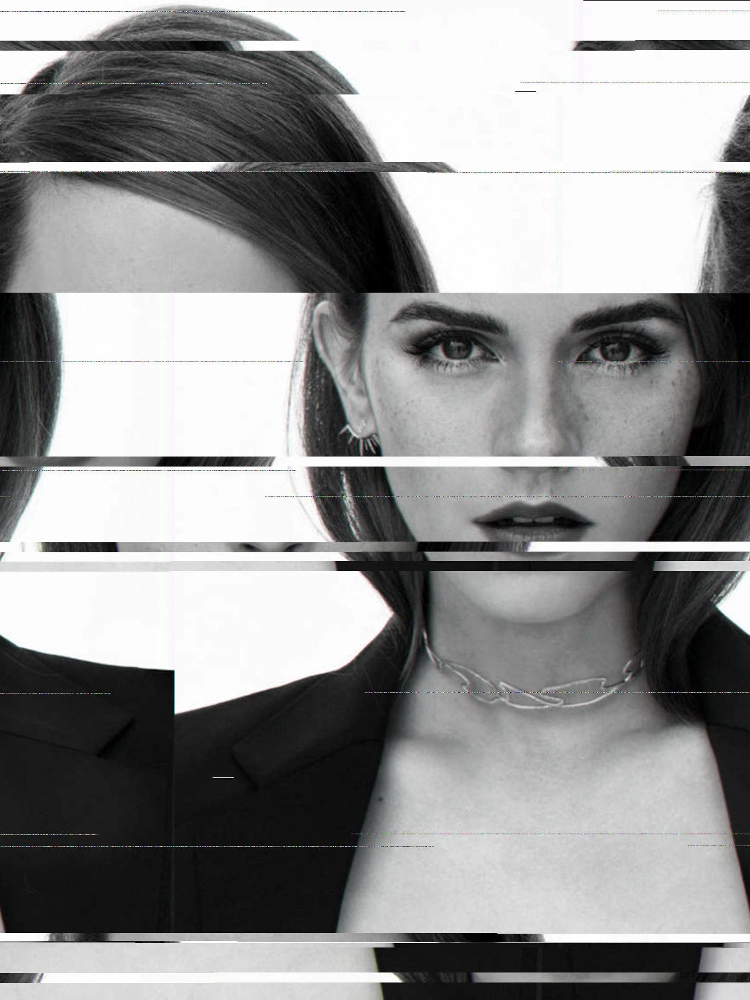
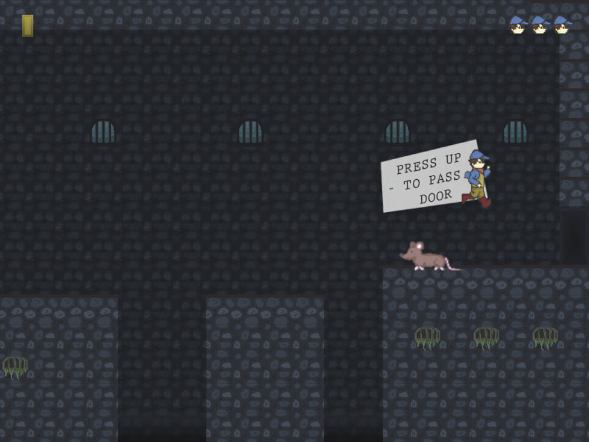

Bonjour, je m’appelle Antoine (ou beckapm). J'ai toujours aimé l'informatique et tous les domaines que les
ordinateurs et internet permettent de visiter.
Je m'intéresse notamment beaucoup à la programmation, le graphisme et la musique, mais aussi l'électronique et la linguistique.
Autant dire que je suis plutôt un touche-à-tout polyvalant et, plutôt auto-didacte aussi, malgré un bref passage à la fac.
Cela fera bientôt 20 ans que j'ai programmé mon premier Hello, world! en Python... depuis je
n'ai pas arrêté de m'investir dans des projets et prototypes de tous poils.
En voici quelques-uns:
Projet Orris
Le projet Orris est constitué de plusieurs séries de vidéos de vulgarisation et tutoriels touchant à l'informatique.
Il a également vocation à entraîner la publication indépendante de plusieurs jeux-vidéos.
2025 Odyssée :
À venir : une série de vidéos présentant l'histoire technique des consoles de jeux-vidéos, incluant la programmation d'un jeu sur Atari 2600 et Nintendo NES, qui ont l'avantage de partager un même processeur (6502).
2025 Tutorial :
En développement : une série de vidéos et d'articles enseignant la programmation informatique en partant des fondations. Des exemples sont présentés en assembleur x86_64, en C, puis en Haskell (Low-level -> high-level).
L'objectif étant de développer une compréhension complète du fonctionnement d'un programme informatique depuis le format d'exécutable (ELF/PE32+) jusqu'à l'interprétation d'un langage à haut niveau d'abstraction.
Applications
Je développe souvent des petites applications pour effectuer des tâches simples ou pour explorer un concept
qui m'intéresse. La plupart n'ont pas d'interfaces graphique et ne sont pas très présentables.
2021 GlitchR :
Une application avec une interface simple, qui permet de reproduire un effet de corruption de mémoire
vidéo
sur une image. Il est possible d'inverser l'ordre des données, de mélanger des paquets de taille
définis, ou
encore de transformer une série d'octets en bruit aléatoire. On peut aussi obtenir des aberrations
chromatiques via la désynchronisation des canaux de couleur. Tout ça de façon séquentielle, avec la
possibilité d'appliquer plusieurs opérations les unes à la suite des autres.

Jeux Vidéos
À l'intersection de beaucoup de mes centres d'intérêt, on peut retrouver le jeu vidéo... à moins que ça ne
soit le contraire et que mes centres d'intérêt ne se soient construits autour du jeu vidéo. Mais qui de
l'oeuf ou de la poule?
2022 Prototype 0822 :
Le principal objet de cette expérience en 3D était de reproduire les contrôles et le comportement de la
caméra du jeu The Lord of the Rings Online dans le moteur Godot 3.
Les assets graphiques sont plutôt du genre... temporaire, mais le feeling est assez réussi.
2019 Prototype 0519 :
Le prototype peu abouti d'un jeu d'aventure en 2D. A vrai dire, je ne suis même pas sûr de
l'histoire. Un aventurier du 18ème siècle se retrouve transporté dans le présent suite à un
accident magique dans une forêt?
Ce que je retiens le plus de ce projet c'est le pixel art réalisé avec Aseprite, qui
rend vraiment pas mal. Il y a aussi le design du personnage qui me plaît toujours autant...
peut-être à revisiter.
2017 The Alchemist :
Un jeu de plateforme-action en 2D développé par une équipe de trois. J'ai participé à la programmation du
moteur en Javascript, designé les tilesets d'environnent et l'interface graphique, puis composé la
musique.
Je suis également coupable d'une partie du level-design, particulièrement des sauts les plus tordus,
avec une chauve-souris qui passe en ligne droite juste sur la trajectoire... beaucoup de fun en hommage
à Castlevania.

Web
Il a pu m'arriver de développer des sites web. Pour tout dire, je me souviens encore d'une époque où on
n'avait pas à s'inquiéter du rendu d'une page sur smartphone. Ah, la douce, douce époque de mon
enfance (bon par contre le Javascript était un désastre).
2015 sud-relooking.fr :
Le site web d'une petite entreprise que j'ai programmé quand j'étais étudiant. Malheureusement,
l'entreprise a fermé, le site est maintenant hors-ligne et je n'ai même pas conservé un
screenshot de ce que ça donnait.
Si je me souviens bien, j'avais utilisé Bootstrap 3 ainsi qu'un peu de PHP+MySQL. Ce site reste
important pour moi car j'avais réalisé entièrement l'identité graphique de l'entreprise (logo,
photomontages, flyers, carte de visite). J'ai simplement retrouvé dans un vieux dossier le logo
et quelques images promotionnelles.
Musique
J'ai pour habitude de composer la musique de tous mes projets. Au besoin avec Cubase et des VSTis
orchestraux, mais j'ai un faible pour la musique de jeu vidéo rétro qui se compose au séquenceur (chiptune).
Je partage ici trois exemples de boucles (musique d'ambiance qui peut se répéter à l'infini) en chiptune que
je n'ai jamais utilisée nulle part.
Seaside Bop (Loop)
Poltergeist (Loop)
Hell's Hospital (Loop)
Plus à venir: cette page a pour but de répertorier mes projets personnels ainsi que
certains projets auxquels j'ai participé.